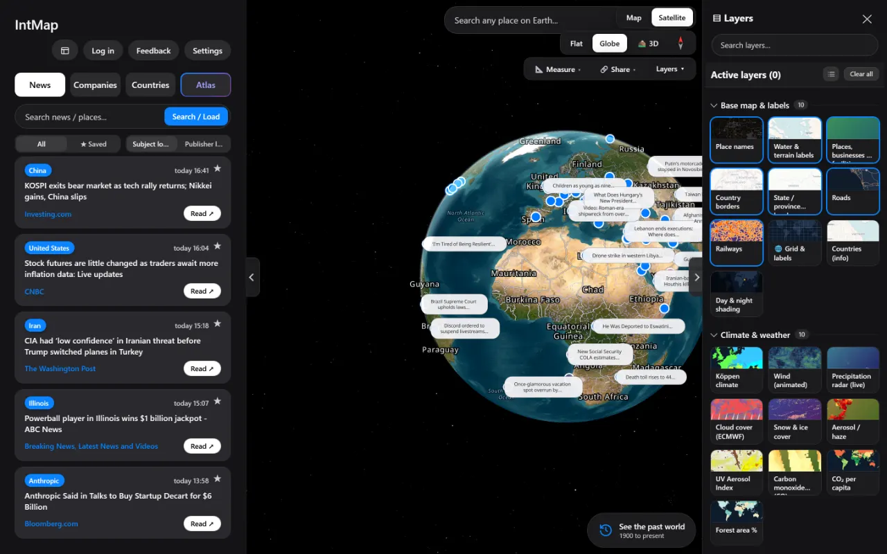

01
World news, on the spot where it happened
Recent headlines are placed at the location of the event rather than the newsroom — and you can switch to the newsroom when that is the question. Search it, save articles, read across languages, and see the geography and infrastructure around a story instead of beside it.

News, placed by subject location